Buat Ekstensi Sendiri (Clone)
Cara ini tidak bisa dibilang bikin, karna bikin harus pakai komputer atau Laptop
1. Siapkan Ekstensi yang akan kita Clone, kita make
Azure Scans
buat contoh, klik ekstensinya pilih FUNGSI dan pilih Klon APK centang
Gunakan metode kloning lama lalu kilik OKE
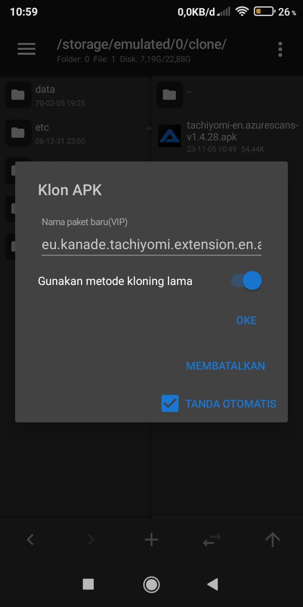
Ekstensi sudah berhasil di clone, jangan install dulu
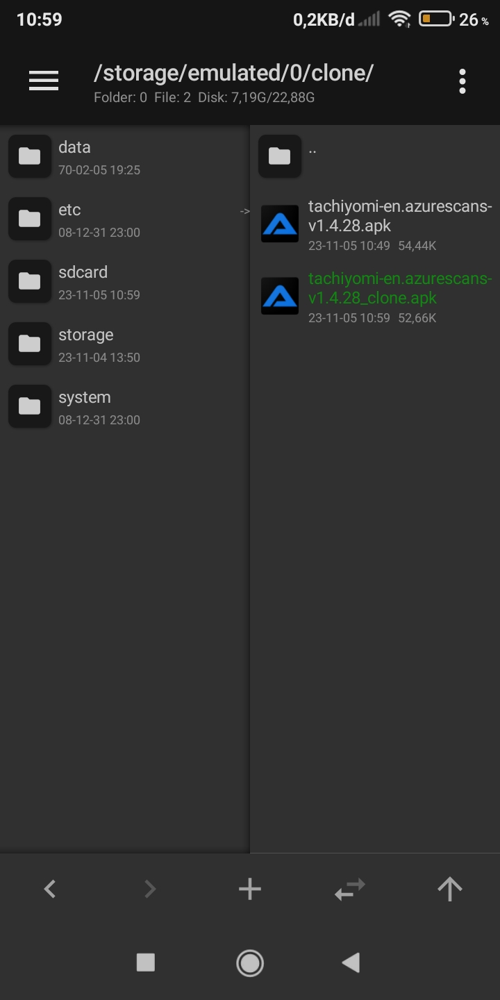
Edit file Classes.dex dari ekstensi yang sudah di clone tadi
dan cari nama Azure Scans dan ganti jadi Azure saja, simpan dan pasang hasil cloning tadi
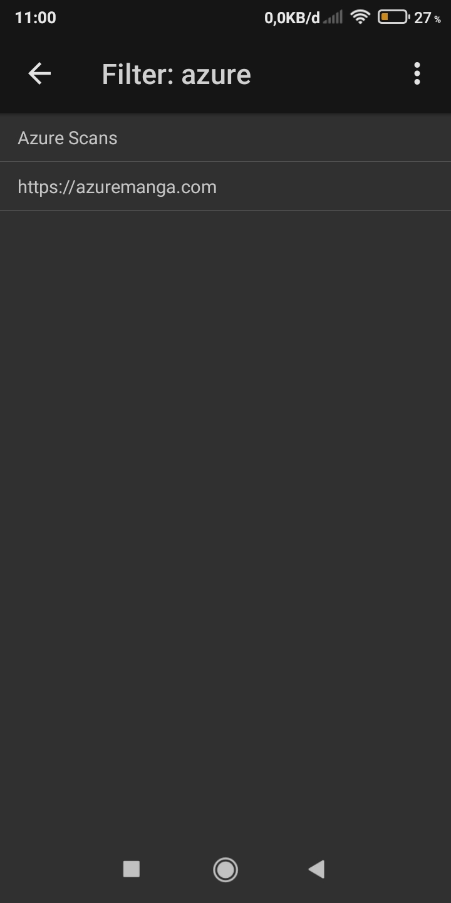
Nah sukses tuh kalau langkahnya bener
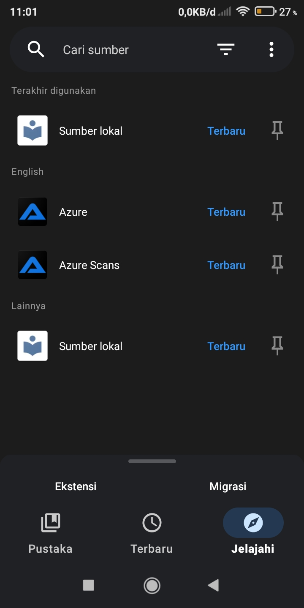
Bisa juga clone lebih dari satu, tapi syaratnya haruslah yang di clone itu Ekstensi yang sudah di clone, Ekstensi yang udah di clone, kita clone lagi, terus secara berurutan, misal ekstensi yg di clone ada tiga, kita clone yang ke tiga agar jadi clone yang ke empat, jangan yang ori di clone buat dijadikan ke empat, itu gak bakal work, di install pun gak bakal muncul di tachi, dan nama pun harus beda agar tidak bentrok
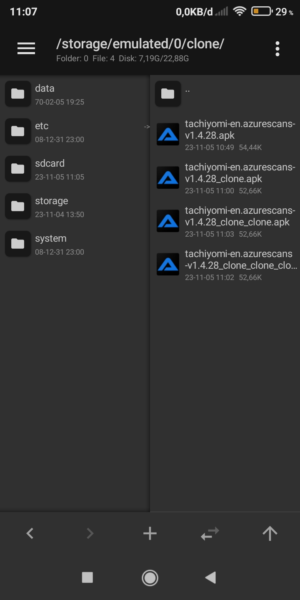
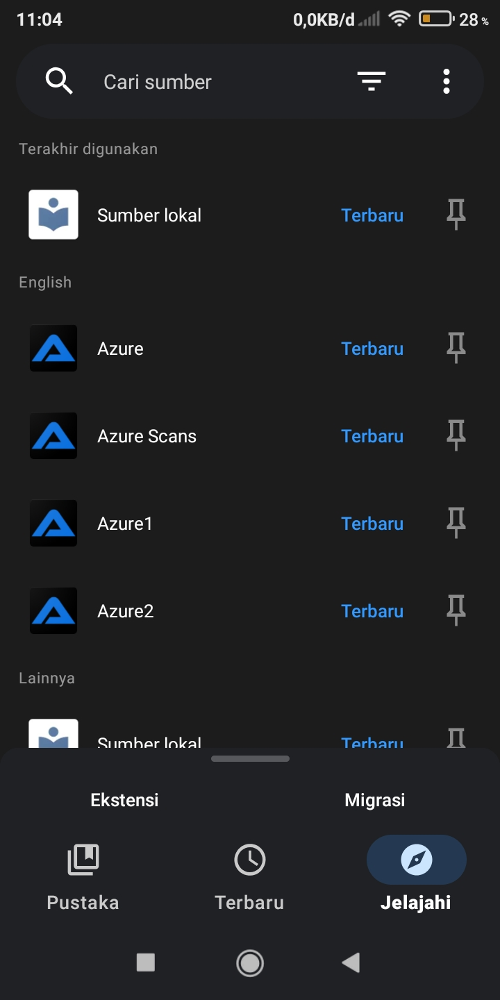
Selesai, silahkan clone sebanyak mungkin kalo mau, tapi buat apa juga banyak2 :v
NOTE: Ekstensi yg di clone gak bakal dapat update, karna nama package tidak ada dalam daftar Ekstensi di official, jadi kalau web yang kalian cari udah ada ekstensinya dari official ya pasang aja (kalau mau)
Tahap Selanjutnya (Optional)
Cara ini boleh dipakai kalau mau, tujuannya buat mengclone sampai ke akar2 nya (biar keren) 😎
1. Edit file Classes.dex tapi yang ini bukan di Kolam Tali,
tapi di Editor Dex Plus...
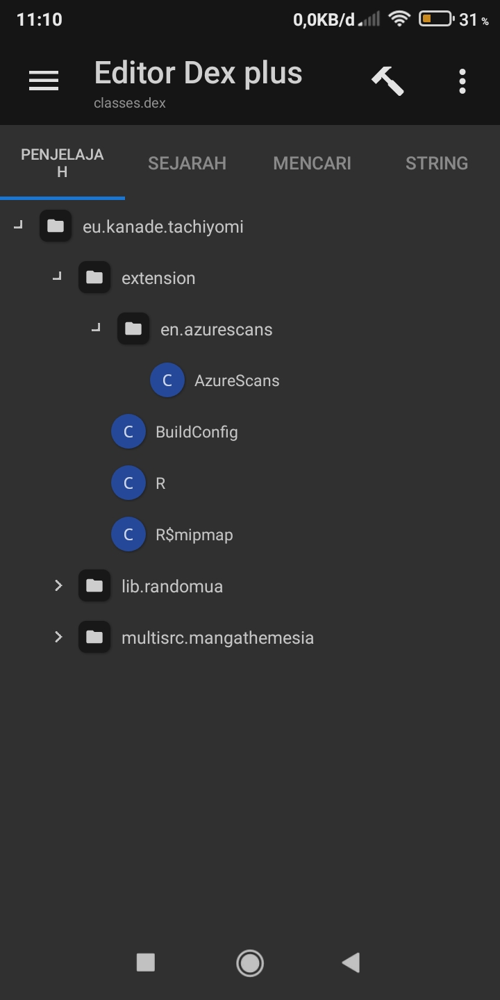
Ganti namanya dari azurescans... jadi azure lalu klik ok
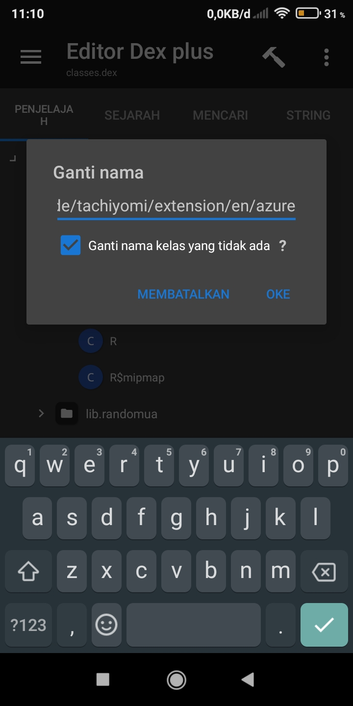
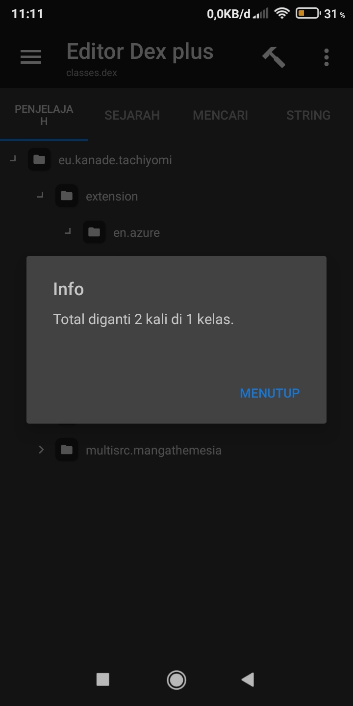
2. Tolong langkah yang ini dibaca bener2
Selanjutnya kita akan mengganti nama file yang warna biru...
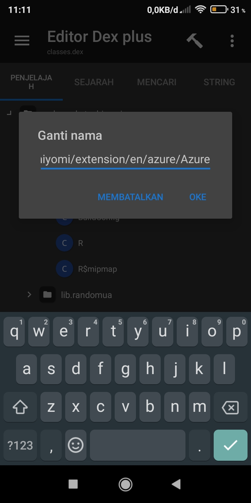
3. Selanjutnya kita buka file Azure yang berwarna biru... tujuan kita untuk mengganti nama AzureScans.kt menjadi Azure.kt...
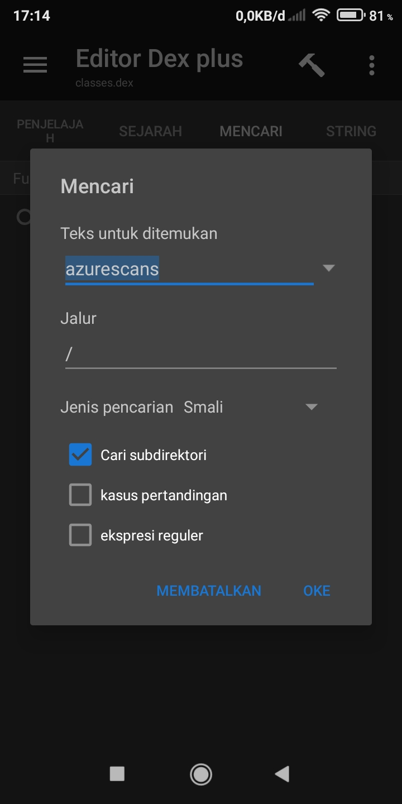
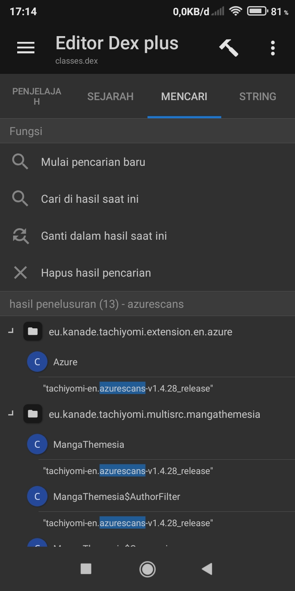
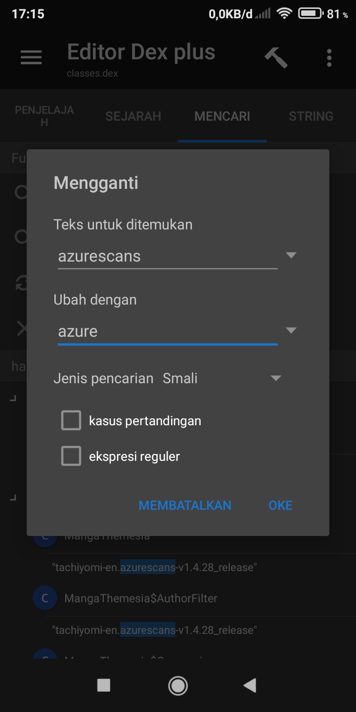
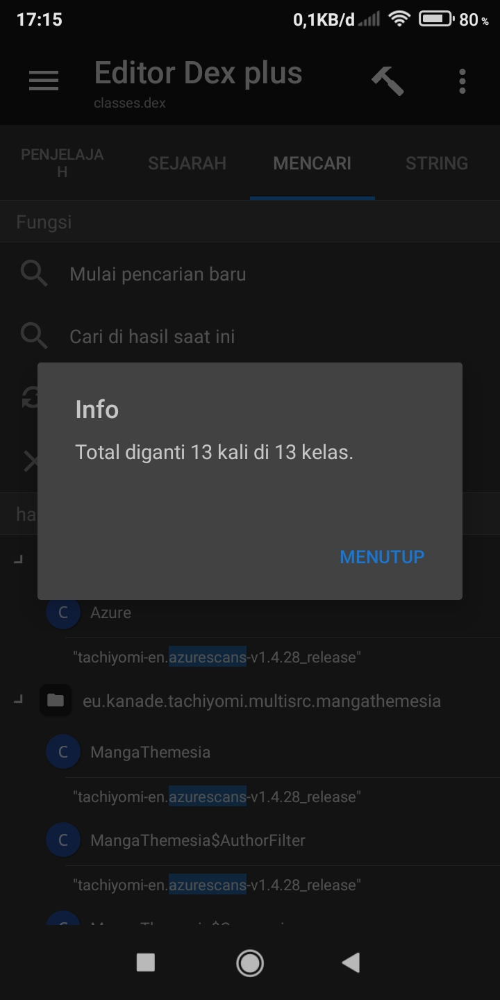
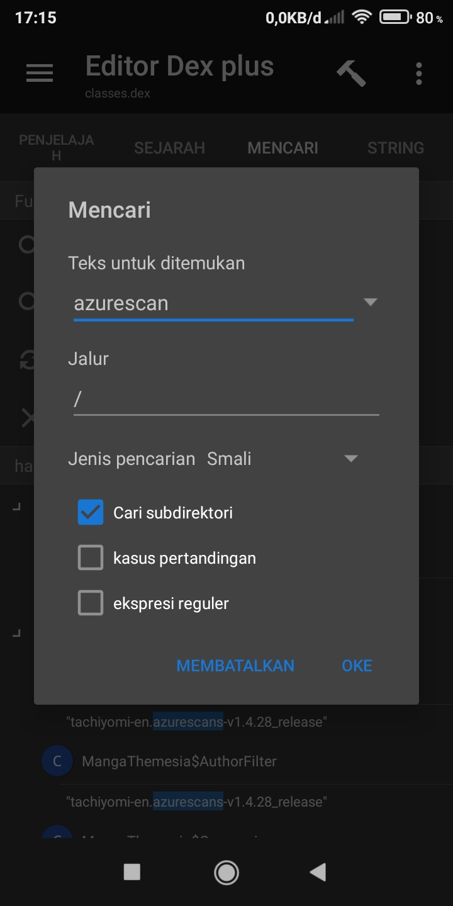
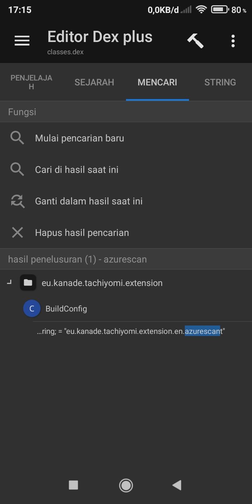
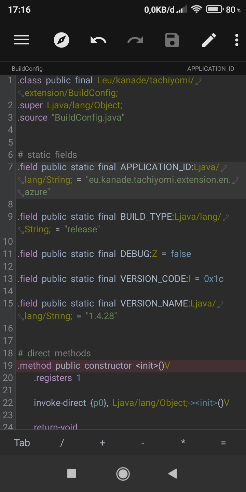
3. Tujuan kita selanjutnya adalah file AndroidManifest.xml...
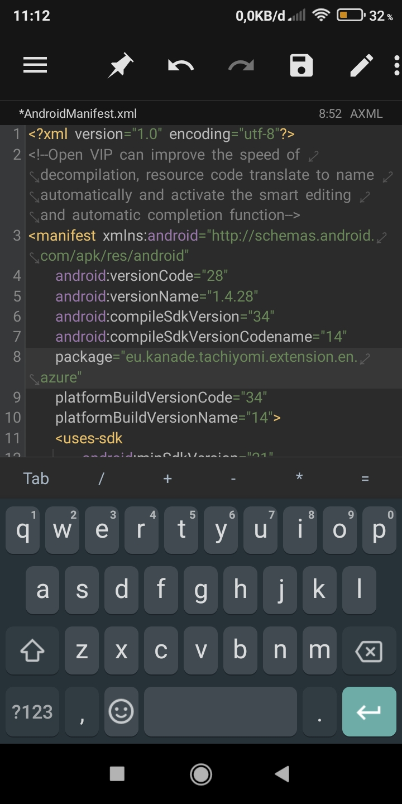
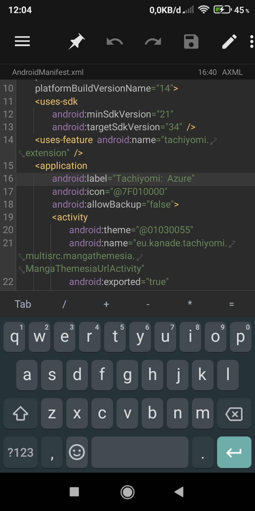
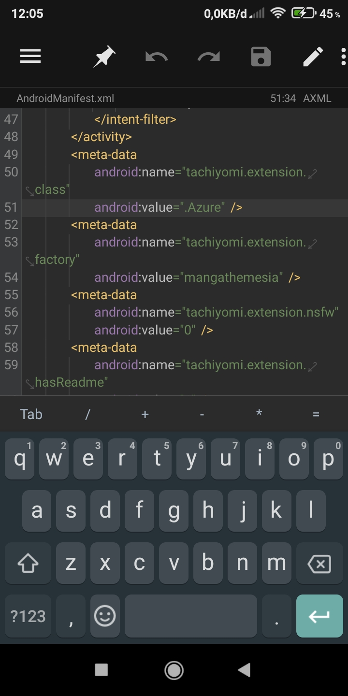
Ok selelesai, akhirnya jadi ekstensi 98% mirip official :v
Ok tutor selesai, Selamat berbongkar bongkar.


PERINGATAN!!!!!
Jangan mencari untung dengan memendekkan URL biar cuan, apa lagi menjual dengan meminta pulsa atau semacamnya, silahkan minta Donasi saja, pihak Tachiyomi ngasih kita ni app free tanpa biaya, tanpa iklan, kalau dari sana free, kita juga harus free, mohon pengertiannya
TERIMA KASIH